Bougez la souris…Dans la pénombre… quelqu'un vous observe
« J'entendis, je sentis avant de voir. »
Tant pis pour King Kong !
Une femme, des gorilles, un combat
Enfant solitaire, Dian rêve de vivre entourée d'animaux sauvages. Un jour, en Afrique, elle tombe « amoureuse » des gorilles de montagne.
Elle découvre des êtres timides, doux et pacifiques, loin de l'image monstrueuse véhiculée à leur propos. Digit, curieux des humains, devient son préféré. Mais la menace rôde : braconnage, perte d'habitat… Dian se lance dans un combat sans merci, et se fait de nombreux ennemis.
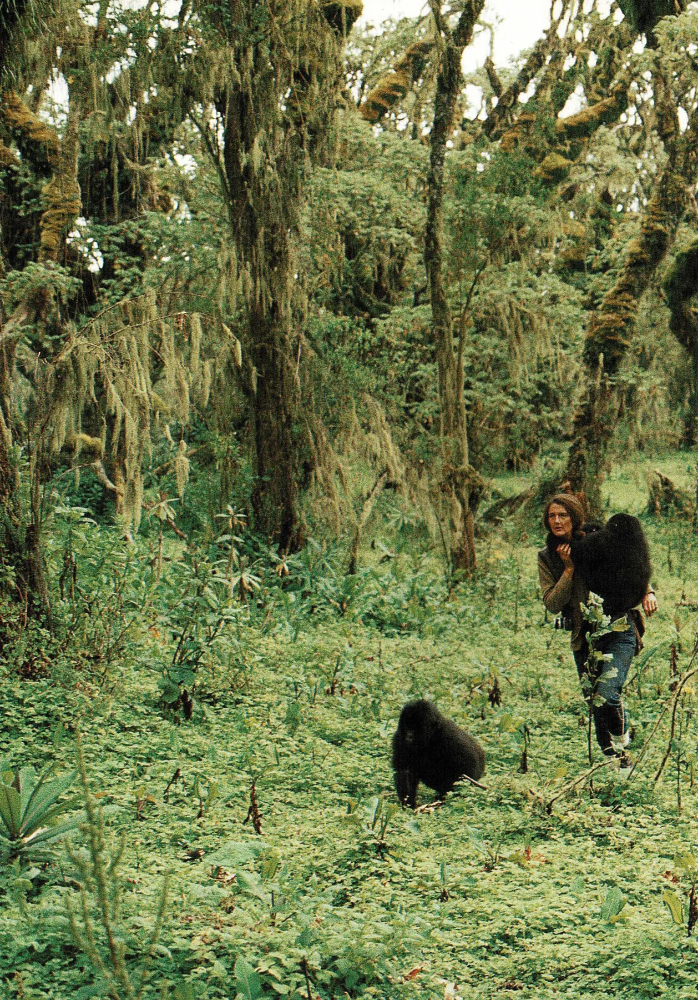
Congo · 1 200 mUn titre en pied de nez à l'image monstrueuse des gorilles, avant que Dian ne les montre au monde : sauvages et puissants, mais sensibles, pacifiques et capables d'une grande douceur.
Le tout petit donne à voir l'immensité
Une comédienne, des objets, et toute une forêt à 3 000 mètres d'altitude.
Figurines, jumelles, photos noir et blanc, terre et feuillages : chaque objet porte une mémoire. Seule en scène, Audrey Boudon fait vivre Dian, ses parents, son aide de camp Sanweke, un marchand sans vergogne, Digit… et une narratrice au regard tantôt admiratif, tantôt critique.
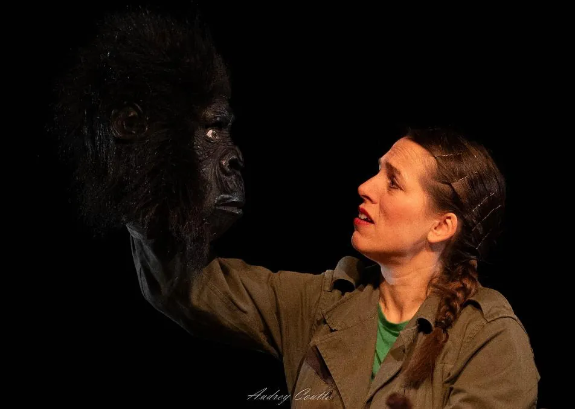
Plan rapprochéObjets
Un arbre miniature devient forêt, une figurine un gorille de 200 kilos.
Bois
Des modules en bois, comme autant d'étapes de la vie de Dian.
Brume
Orages, rais de lumière, obscurité forestière et clairs-obscurs.
Musique
Voix et basse de Solo Gomez, mêlées aux cris de la jungle.
Au cœur du spectacle
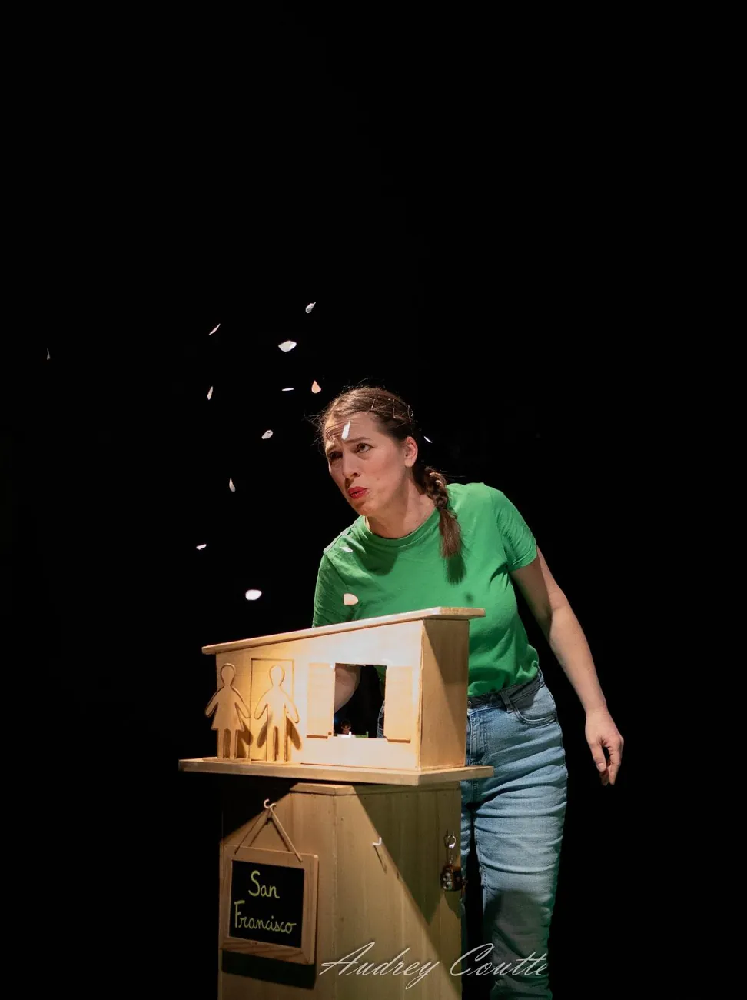
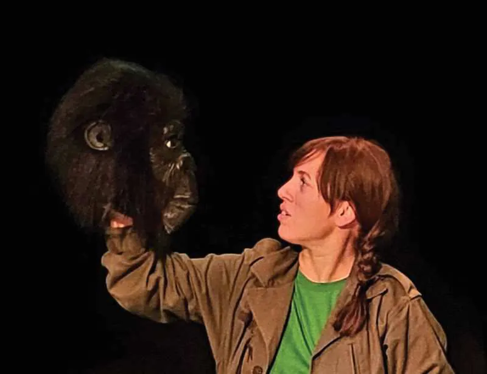
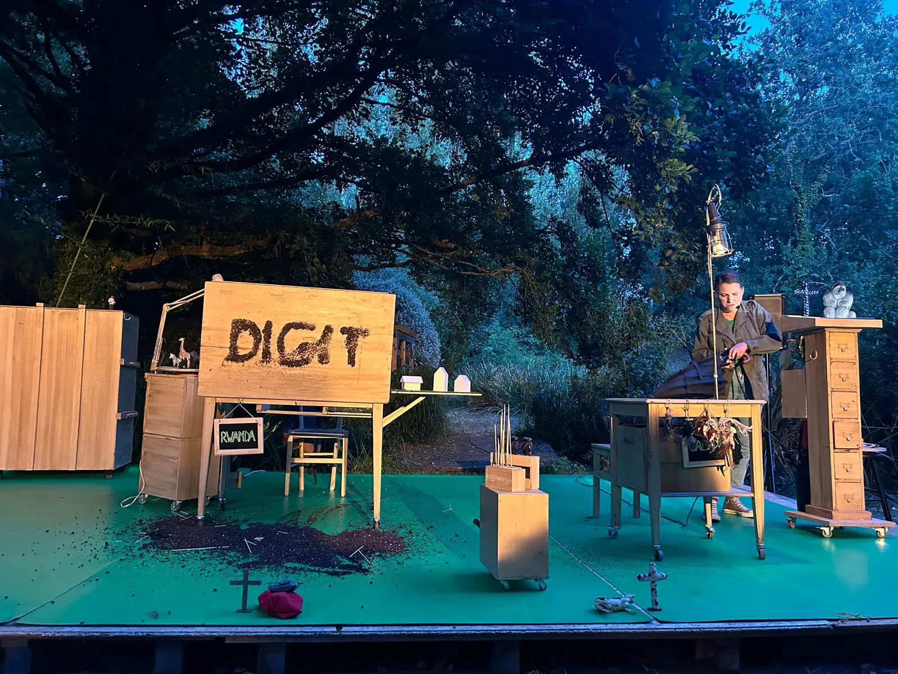
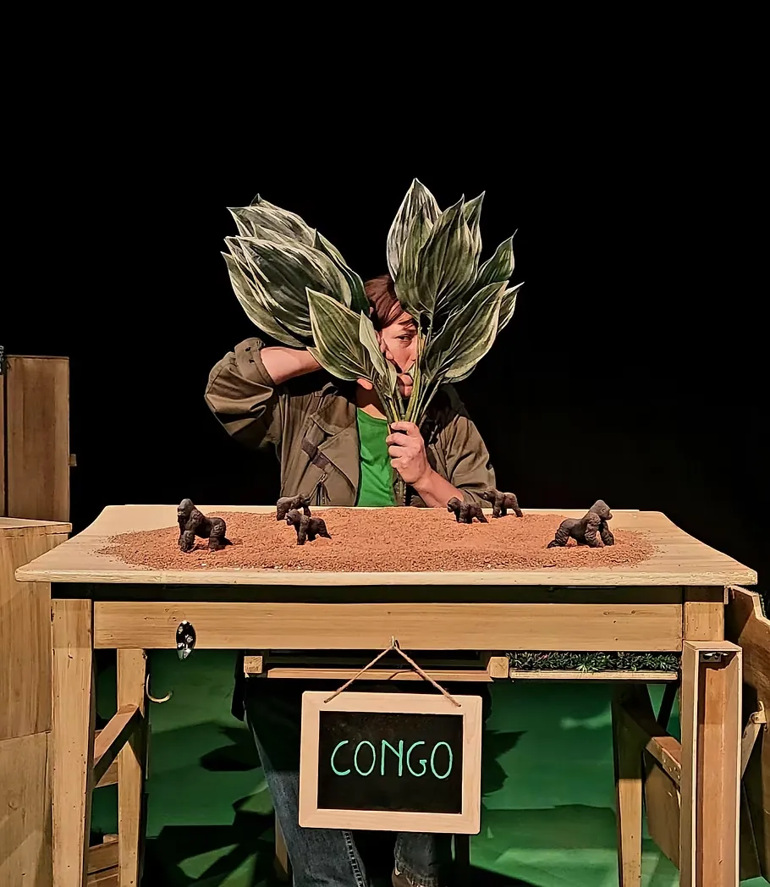
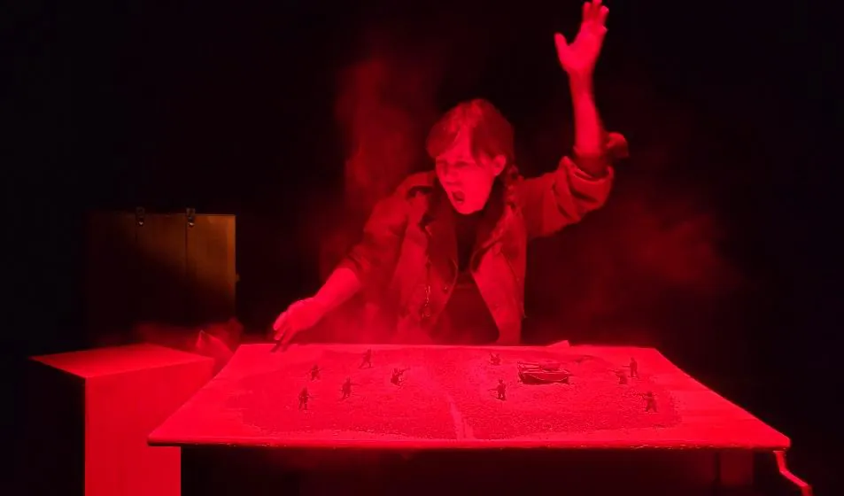
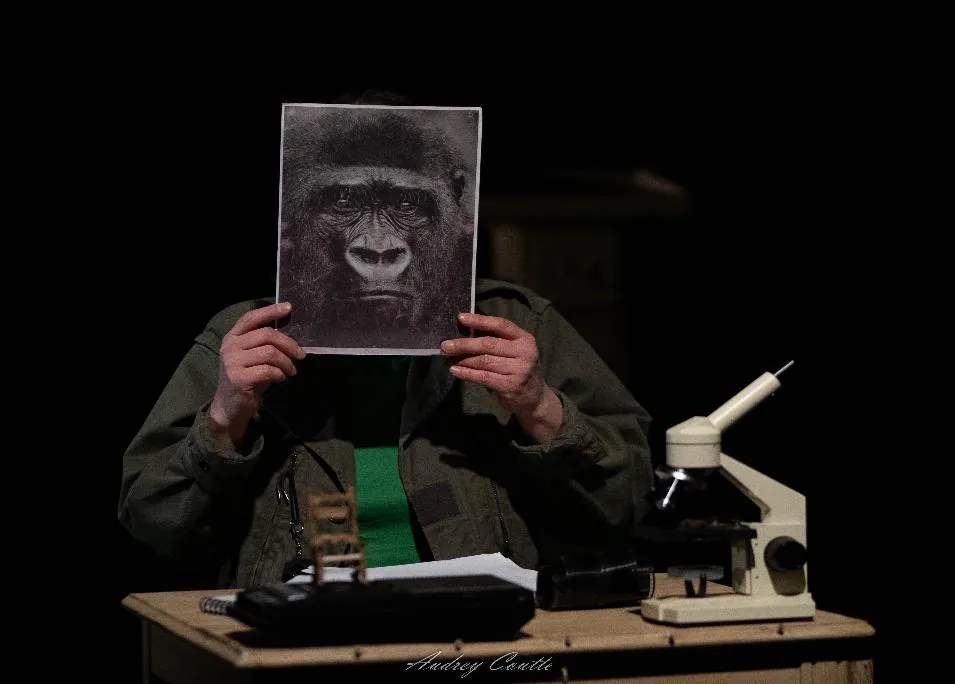
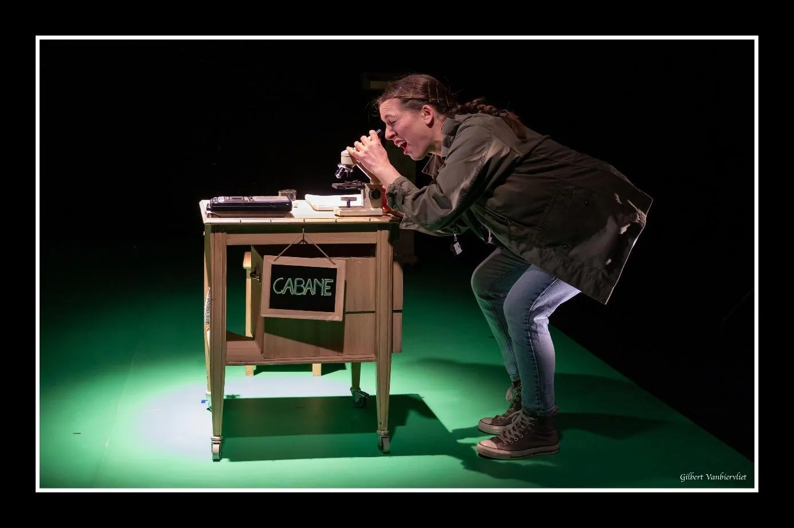
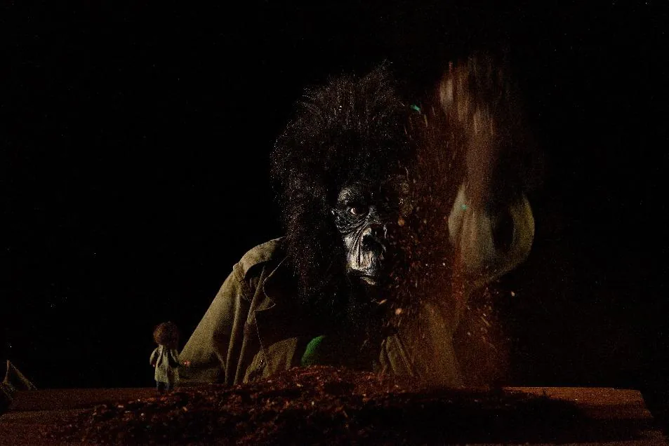
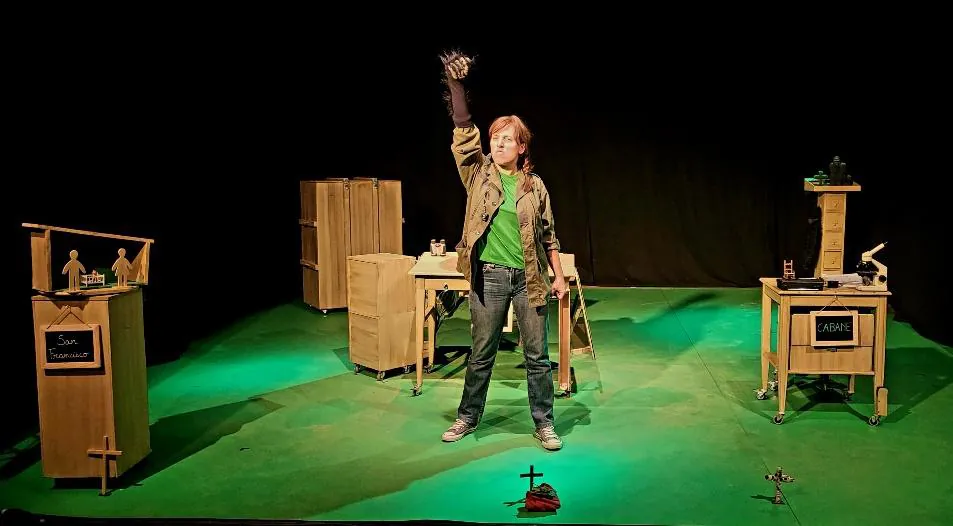
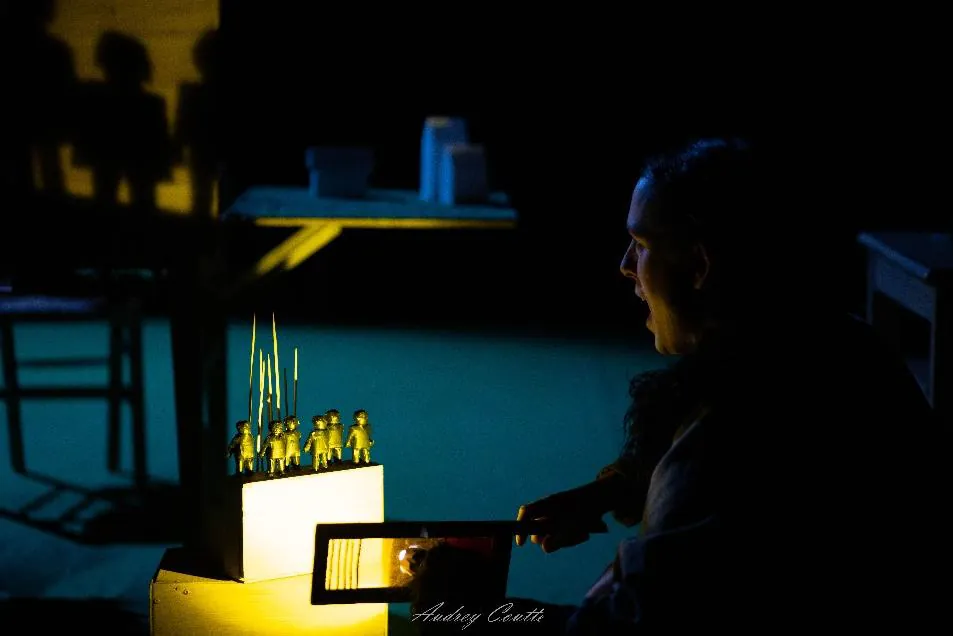
Une seule personne peut-elle changer le cours de l'histoire ?
Peut-on être ami·e avec un animal sauvage ?
Quelle est la part d'humanité des gorilles ?
Et la nôtre, d'animalité ?
Entrez dans la brume
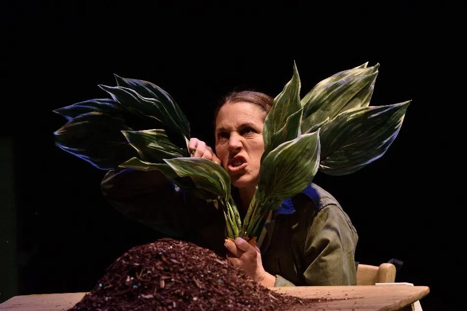
Vidéo YouTube chargée uniquement au clic.
Le théâtre d'objets a ce pouvoir de parler à l'âme d'enfant présente en chacun de nous. »
Audrey Boudon, portrait dans Le Monde, 14 janvier 2025 · lire
Petits et grands ne rentreront assurément pas insensibles de ce voyage. »
La Voix du Nord, 10 février 2025
Venez le voir
- 3 nov.2026 · 10 h & 14 h 15MCL de GauchyGauchy (02)Scolaires
- 12 mars2027 · 10 hCentre Culturel François MitterrandPlouzané (29)Scolaire
- 13 mars2027 · 11 hCentre Culturel François MitterrandPlouzané (29)Tout public
- 15 avril2027 · horaire à venirFestival Lesneven S'emmêleLesneven (29)Festival
D'autres dates en préparation en Dordogne (24), Ille-et-Vilaine (35) et Pas-de-Calais (62).
Faites venir la forêt chez vous
En salle, en itinérance ou en pleine nature : dans les bois, les parcs, les jardins, les lieux patrimoniaux. Au plus près du vivant.
Fiche pratique
- Public
- Tout public dès 8 ans · scolaires dès le CM1
- Durée
- 1 heure
- Jauge
- 100 à 130 en gradin
- Plateau
- 6 × 6 m, h. 3 m, boîte noire
- Extérieur
- Version légère, tout terrain
Autour du spectacle
- Environnement, primatologie, philosophie
- Ateliers théâtre, danse, arts plastiques, argile, photo
- Exposition des œuvres créées
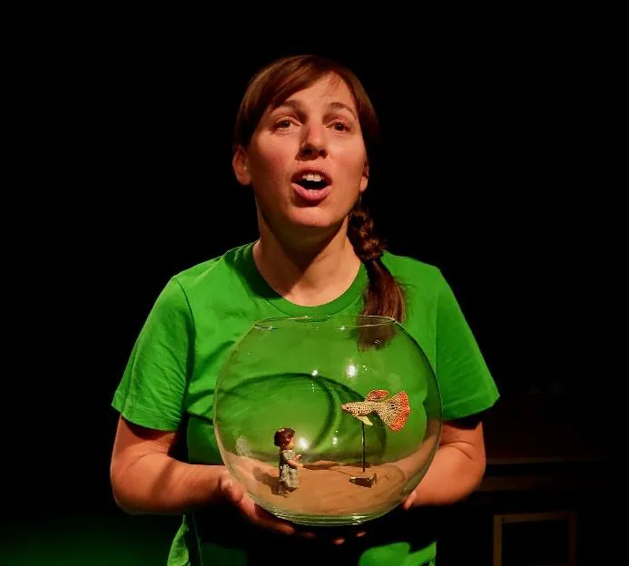
Audrey Boudon
Comédienne, autrice, metteuse en scène. Du théâtre contemporain au classique, du clown à l'improvisation et au théâtre d'objets, elle cherche la beauté des personnages, la poésie des images et la magie des instants.
« Toujours avoir 5 ans ! »
Elle défend un théâtre décloisonné : pour enfants accessible aux adultes, et pour adultes accessible aux enfants.
Maniaka Théâtre
Depuis 2002, des spectacles accessibles et « proches des gens », visuels, poétiques ou oniriques. De la métropole lilloise à Saint-Lunaire.
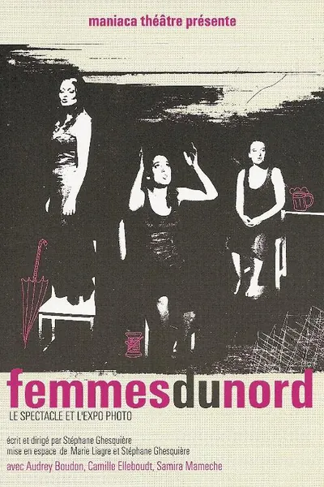
Femmes du Nord
Dès 12 ans
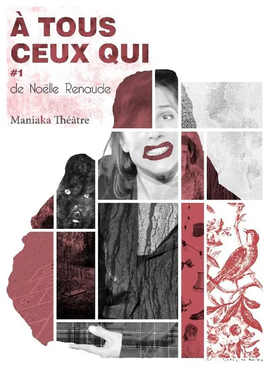
À tous ceux qui #1
2017 · dès 10 ans
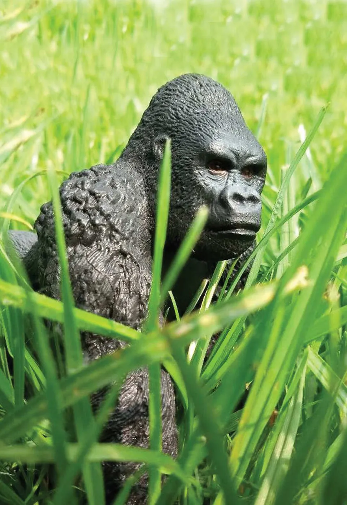
Tant pis pour King Kong !
2022 · en tournée · dès 8 ans
Parlons-en
Artistique
Audrey Boudon
06 16 45 10 98
Administration
Mauve Serra
contact@maniaka-theatre.fr
Siège
625, boulevard du Décollé, 35800 Saint-Lunaire
07 67 97 13 41 · Facebook